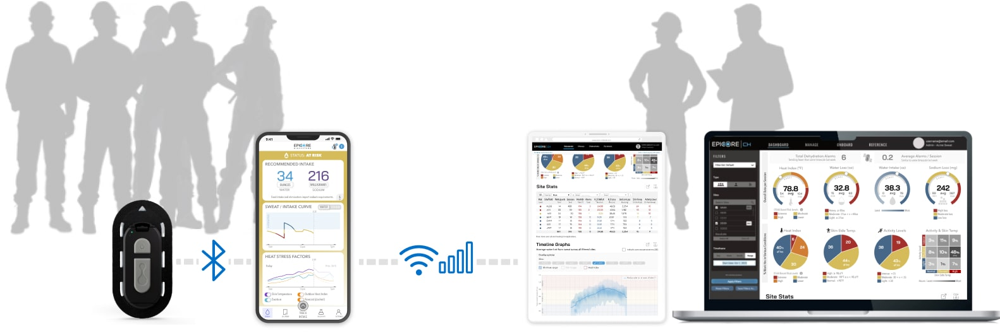

| Project: | Climate Tech • Healthcare • Wearable • Mobile App • Responsive Web Portal |
| Scope: | Research • Design • User Testing |
| Roles: |
|
| Tools: | Figma |
| Year: | 2022-2024 |
As temperatures soar, workers and first responders face increasingly dangerous conditions. OSHA guidelines, based on averages, prevent fatalities caused directly by heat events; but for these “industrial athletes” sustained heat stress needs an individually-tailored approach to prevent both cognitive and physical impairment, and chronic illness beyond the job site.
The Connected Hydration platform helps workers avoid heat stress at the onset, and enables safety staff to effectively deploy and tune prevention strategies.
Key to Connected Hydration’s effort is a wearable / mobile app / web portal, which communicates data from workers’ arms to safety staff. I co-designed the mobile and web UIs for corporate partener trials, followed by the commercial launch. Along the way, the product appeared in several articles, including IEEE Spectrum, TIME, Forbes, and Inc. Along the way, we earned several mentions (IEEE Spectrum, TIME, Forbes, Inc.) and awards from Red Dot and Occupational Health & Safety.
We began working with Epicore’s team on the heels of an initial summer deployment of trials with established partners. Consequently, we had access to participant feedback, from workers, to on-site safety personnel, corporate managers, to Epicore staff. This provided a solid foundation to design the app with a tailored feature set.
In close communication with the CTO, Mobile / Software / Cloud Engineers, and Industrial Designer, I co-created screens for two general scenarios that we validated through interviews:
Workers’ breaks are short, and often the only time they can access phones to view their measured fluid and electrolyte loss and log their replenishment.
The workers we interviewed were deeply curious about their personal sweat profile. Some wanted to troubleshoot performance, and others enjoyed some friendly competition. With the module’s ability to measure fluid and electrolyte loss, skin temperature under PPE, and sustained activity levels, we could convey clear, relevant, custom insights.
Epicore Biosystems
Maura Buckley
Stephen Lee, Co-founder & CTO
Weihua Li
Dave Macintosh
Alan Scarth
Julia Spinelli
Jessica Wallace
Don Wright
User Experience
Nilpa Jhaveri
Krispin Leydon
Mobile App Development
Tom DiZoglio
Graphic Design
Sarah LaTarte